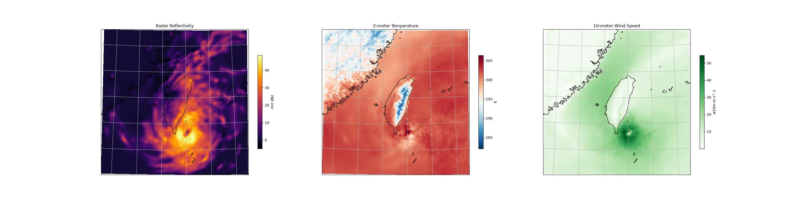

Generative Downscaling¶
Generative downscaling over Taiwan using CorrDiff diffusion model.
This example will demonstrate how to user Nvidia's CorrDiff model, trained for predicting weather over Taiwan, to perform generative downscaling from quarter degree global forecast data to ~3km.
This checkpoint was trained on ERA5 data and WRF data that spans 2018-2021 at one hour time resolution. In this example, we demonstrate an application to GFS data for a typhoon super-resolution from 2023. The model's performance on GFS data and on data from this year has not been evaluated.
In this example you will learn:
- Creating a custom workflow for running CorrDiff inference
- Creating a data-source for CorrDiff's input
- Initializing and running CorrDiff diagnostic model
- Post-processing results.
Creating a Simple CorrDiff Workflow¶
As usual, we start with creating a simple workflow to run CorrDiff in. To maximize the
generalization of this workflow, we use dependency injection following the pattern
provided inside earth2studio.run. Since CorrDiff is a diagnostic model, this
workflow won't predict a time-series, rather just an instantaneous prediction.
For this workflow, we specify
- time: Input list of datetimes / strings to run inference for
- corrdiff: The initialized CorrDiffTaiwan model
- data: Initialized data source to fetch initial conditions from
- io: IOBackend
- number_of_samples: Number of samples to generate from the model
import os
os.makedirs("outputs", exist_ok=True)
from dotenv import load_dotenv
load_dotenv() # TODO: make common example prep function
from datetime import datetime
import numpy as np
import torch
from loguru import logger
from earth2studio.data import DataSource
from earth2studio.io import IOBackend
from earth2studio.models.dx import CorrDiffTaiwan
from earth2studio.utils.time import to_time_array
def run(
time: list[str] | list[datetime] | list[np.datetime64],
corrdiff: CorrDiffTaiwan,
data: DataSource,
io: IOBackend,
number_of_samples: int = 1,
) -> IOBackend:
"""CorrDiff infernce workflow
Parameters
----------
time : list[str] | list[datetime] | list[np.datetime64]
List of string, datetimes or np.datetime64
corrdiff : CorrDiffTaiwan
CorrDiff mode
data : DataSource
Data source
io : IOBackend
IO object
number_of_samples : int, optional
Number of samples to generate, by default 1
Returns
-------
IOBackend
Output IO object
"""
logger.info("Running corrdiff inference!")
device = torch.device("cuda" if torch.cuda.is_available() else "cpu")
logger.info(f"Inference device: {device}")
corrdiff = corrdiff.to(device)
# Update the number of samples for corrdiff to generate
corrdiff.number_of_samples = number_of_samples
# Fetch data from data source and load onto device
time = to_time_array(time)
from earth2studio.data import fetch_data
from earth2studio.run import map_field
x = fetch_data(
data, time, corrdiff.input_coords().coords["variable"].values, device=device
).squeeze("lead_time", drop=True)
x = map_field(x, corrdiff.input_coords())
logger.success(f"Fetched data from {data.__class__.__name__}")
# Set up IO backend. CorrDiff's output signature is already concrete here since
# it was derived from the fetched initial condition, so it is used directly as
# the template. The output grid is curvilinear, so its two-dimensional `lat` and
# `lon` are auxiliary coordinates of the `y`/`x` dimensions; the backend stores
# them alongside the data arrays, ready for the plotting section.
io.add_array(corrdiff.output_coords(x))
logger.info("Inference starting!")
x = corrdiff(x)
io.write(x)
logger.success("Inference complete")
return io
Set Up¶
With the workflow defined, the next step is initializing the needed components from Earth-2 studio
It's clear we need the following:
- Diagnostic Model: CorrDiff model for Taiwan
earth2studio.models.dx.CorrDiffTaiwan. - Datasource: Pull data from the GFS data api
earth2studio.data.GFS. - IO Backend: Save the outputs into a Zarr store
earth2studio.io.ZarrBackend.
from earth2studio.data import GFS
from earth2studio.io import ZarrBackend
# Create CorrDiff model
package = CorrDiffTaiwan.load_default_package()
corrdiff = CorrDiffTaiwan.load_model(package)
# Create the data source
data = GFS()
# Create the IO handler, store in memory
io = ZarrBackend()
Console output378 lines
Downloading corrdiff_inference_package.zip: 0%| | 0.00/684M [00:00<?, ?B/s]
Downloading corrdiff_inference_package.zip: 0%| | 752k/684M [00:00<01:33, 7.64MB/s]
Downloading corrdiff_inference_package.zip: 1%| | 6.20M/684M [00:00<00:19, 36.0MB/s]
Downloading corrdiff_inference_package.zip: 2%|▏ | 10.5M/684M [00:00<00:17, 39.9MB/s]
Downloading corrdiff_inference_package.zip: 2%|▏ | 14.5M/684M [00:00<00:19, 35.4MB/s]
Downloading corrdiff_inference_package.zip: 3%|▎ | 18.0M/684M [00:00<00:21, 33.0MB/s]
Downloading corrdiff_inference_package.zip: 3%|▎ | 22.1M/684M [00:00<00:19, 35.9MB/s]
Downloading corrdiff_inference_package.zip: 4%|▍ | 26.8M/684M [00:00<00:19, 36.1MB/s]
Downloading corrdiff_inference_package.zip: 5%|▌ | 35.8M/684M [00:00<00:13, 52.2MB/s]
Downloading corrdiff_inference_package.zip: 6%|▋ | 43.0M/684M [00:01<00:11, 58.6MB/s]
Downloading corrdiff_inference_package.zip: 7%|▋ | 50.2M/684M [00:01<00:10, 61.7MB/s]
Downloading corrdiff_inference_package.zip: 8%|▊ | 56.2M/684M [00:01<00:12, 53.2MB/s]
Downloading corrdiff_inference_package.zip: 9%|▉ | 62.9M/684M [00:01<00:11, 56.8MB/s]
Downloading corrdiff_inference_package.zip: 10%|█ | 69.0M/684M [00:01<00:10, 58.7MB/s]
Downloading corrdiff_inference_package.zip: 11%|█ | 74.8M/684M [00:01<00:11, 56.4MB/s]
Downloading corrdiff_inference_package.zip: 12%|█▏ | 80.7M/684M [00:01<00:13, 47.0MB/s]
Downloading corrdiff_inference_package.zip: 13%|█▎ | 87.6M/684M [00:01<00:11, 52.8MB/s]
Downloading corrdiff_inference_package.zip: 14%|█▍ | 95.1M/684M [00:01<00:10, 59.3MB/s]
Downloading corrdiff_inference_package.zip: 15%|█▌ | 103M/684M [00:02<00:09, 65.8MB/s]
Downloading corrdiff_inference_package.zip: 16%|█▌ | 110M/684M [00:02<00:11, 50.5MB/s]
Downloading corrdiff_inference_package.zip: 17%|█▋ | 116M/684M [00:02<00:10, 55.0MB/s]
Downloading corrdiff_inference_package.zip: 18%|█▊ | 124M/684M [00:02<00:09, 60.1MB/s]
Downloading corrdiff_inference_package.zip: 19%|█▉ | 130M/684M [00:02<00:09, 58.5MB/s]
Downloading corrdiff_inference_package.zip: 20%|█▉ | 136M/684M [00:02<00:10, 56.8MB/s]
Downloading corrdiff_inference_package.zip: 21%|██ | 142M/684M [00:02<00:11, 48.5MB/s]
Downloading corrdiff_inference_package.zip: 21%|██▏ | 147M/684M [00:03<00:12, 44.7MB/s]
Downloading corrdiff_inference_package.zip: 22%|██▏ | 151M/684M [00:03<00:13, 42.6MB/s]
Downloading corrdiff_inference_package.zip: 23%|██▎ | 155M/684M [00:03<00:13, 41.0MB/s]
Downloading corrdiff_inference_package.zip: 23%|██▎ | 160M/684M [00:03<00:13, 40.5MB/s]
Downloading corrdiff_inference_package.zip: 24%|██▍ | 163M/684M [00:03<00:13, 39.7MB/s]
Downloading corrdiff_inference_package.zip: 24%|██▍ | 167M/684M [00:03<00:13, 38.8MB/s]
Downloading corrdiff_inference_package.zip: 25%|██▌ | 171M/684M [00:03<00:13, 38.7MB/s]
Downloading corrdiff_inference_package.zip: 26%|██▌ | 175M/684M [00:03<00:13, 38.9MB/s]
Downloading corrdiff_inference_package.zip: 26%|██▌ | 179M/684M [00:03<00:13, 38.6MB/s]
Downloading corrdiff_inference_package.zip: 27%|██▋ | 182M/684M [00:04<00:13, 38.6MB/s]
Downloading corrdiff_inference_package.zip: 27%|██▋ | 186M/684M [00:04<00:13, 38.9MB/s]
Downloading corrdiff_inference_package.zip: 28%|██▊ | 190M/684M [00:04<00:13, 37.2MB/s]
Downloading corrdiff_inference_package.zip: 28%|██▊ | 194M/684M [00:04<00:15, 33.3MB/s]
Downloading corrdiff_inference_package.zip: 29%|██▉ | 198M/684M [00:04<00:14, 35.3MB/s]
Downloading corrdiff_inference_package.zip: 29%|██▉ | 201M/684M [00:04<00:14, 34.3MB/s]
Downloading corrdiff_inference_package.zip: 30%|██▉ | 205M/684M [00:04<00:14, 35.5MB/s]
Downloading corrdiff_inference_package.zip: 30%|███ | 209M/684M [00:04<00:14, 35.3MB/s]
Downloading corrdiff_inference_package.zip: 31%|███ | 212M/684M [00:04<00:15, 31.2MB/s]
Downloading corrdiff_inference_package.zip: 31%|███▏ | 215M/684M [00:05<00:15, 31.3MB/s]
Downloading corrdiff_inference_package.zip: 32%|███▏ | 218M/684M [00:05<00:15, 30.8MB/s]
Downloading corrdiff_inference_package.zip: 32%|███▏ | 221M/684M [00:05<00:16, 29.8MB/s]
Downloading corrdiff_inference_package.zip: 33%|███▎ | 224M/684M [00:05<00:17, 27.2MB/s]
Downloading corrdiff_inference_package.zip: 33%|███▎ | 227M/684M [00:05<00:19, 24.1MB/s]
Downloading corrdiff_inference_package.zip: 34%|███▎ | 229M/684M [00:05<00:20, 23.1MB/s]
Downloading corrdiff_inference_package.zip: 34%|███▍ | 231M/684M [00:05<00:21, 22.2MB/s]
Downloading corrdiff_inference_package.zip: 34%|███▍ | 234M/684M [00:05<00:21, 21.5MB/s]
Downloading corrdiff_inference_package.zip: 34%|███▍ | 236M/684M [00:06<00:21, 21.8MB/s]
Downloading corrdiff_inference_package.zip: 35%|███▍ | 238M/684M [00:06<00:21, 22.0MB/s]
Downloading corrdiff_inference_package.zip: 35%|███▌ | 240M/684M [00:06<00:21, 21.6MB/s]
Downloading corrdiff_inference_package.zip: 35%|███▌ | 242M/684M [00:06<00:21, 21.7MB/s]
Downloading corrdiff_inference_package.zip: 36%|███▌ | 245M/684M [00:06<00:21, 21.9MB/s]
Downloading corrdiff_inference_package.zip: 36%|███▌ | 247M/684M [00:06<00:21, 21.1MB/s]
Downloading corrdiff_inference_package.zip: 36%|███▋ | 249M/684M [00:06<00:21, 21.5MB/s]
Downloading corrdiff_inference_package.zip: 37%|███▋ | 251M/684M [00:06<00:20, 22.1MB/s]
Downloading corrdiff_inference_package.zip: 37%|███▋ | 254M/684M [00:06<00:19, 23.2MB/s]
Downloading corrdiff_inference_package.zip: 37%|███▋ | 256M/684M [00:07<00:20, 22.2MB/s]
Downloading corrdiff_inference_package.zip: 38%|███▊ | 258M/684M [00:07<00:21, 21.2MB/s]
Downloading corrdiff_inference_package.zip: 38%|███▊ | 260M/684M [00:07<00:22, 19.5MB/s]
Downloading corrdiff_inference_package.zip: 38%|███▊ | 262M/684M [00:07<00:23, 18.9MB/s]
Downloading corrdiff_inference_package.zip: 39%|███▊ | 264M/684M [00:07<00:24, 17.9MB/s]
Downloading corrdiff_inference_package.zip: 39%|███▉ | 266M/684M [00:07<00:24, 17.8MB/s]
Downloading corrdiff_inference_package.zip: 39%|███▉ | 267M/684M [00:07<00:25, 17.2MB/s]
Downloading corrdiff_inference_package.zip: 39%|███▉ | 269M/684M [00:07<00:25, 17.2MB/s]
Downloading corrdiff_inference_package.zip: 40%|███▉ | 271M/684M [00:07<00:24, 17.5MB/s]
Downloading corrdiff_inference_package.zip: 40%|███▉ | 272M/684M [00:08<00:25, 17.2MB/s]
Downloading corrdiff_inference_package.zip: 40%|████ | 274M/684M [00:08<00:24, 17.3MB/s]
Downloading corrdiff_inference_package.zip: 40%|████ | 276M/684M [00:08<00:24, 17.7MB/s]
Downloading corrdiff_inference_package.zip: 41%|████ | 278M/684M [00:08<00:23, 18.3MB/s]
Downloading corrdiff_inference_package.zip: 41%|████ | 280M/684M [00:08<00:23, 17.8MB/s]
Downloading corrdiff_inference_package.zip: 41%|████ | 281M/684M [00:08<00:23, 17.8MB/s]
Downloading corrdiff_inference_package.zip: 41%|████▏ | 283M/684M [00:08<00:22, 18.7MB/s]
Downloading corrdiff_inference_package.zip: 42%|████▏ | 285M/684M [00:08<00:24, 17.3MB/s]
Downloading corrdiff_inference_package.zip: 42%|████▏ | 287M/684M [00:08<00:25, 16.3MB/s]
Downloading corrdiff_inference_package.zip: 42%|████▏ | 288M/684M [00:09<00:26, 15.6MB/s]
Downloading corrdiff_inference_package.zip: 42%|████▏ | 290M/684M [00:09<00:26, 15.5MB/s]
Downloading corrdiff_inference_package.zip: 43%|████▎ | 291M/684M [00:09<00:27, 15.0MB/s]
Downloading corrdiff_inference_package.zip: 43%|████▎ | 293M/684M [00:09<00:27, 15.0MB/s]
Downloading corrdiff_inference_package.zip: 43%|████▎ | 294M/684M [00:09<00:27, 14.9MB/s]
Downloading corrdiff_inference_package.zip: 43%|████▎ | 296M/684M [00:09<00:27, 14.9MB/s]
Downloading corrdiff_inference_package.zip: 43%|████▎ | 297M/684M [00:09<00:29, 13.5MB/s]
Downloading corrdiff_inference_package.zip: 44%|████▎ | 299M/684M [00:09<00:37, 10.9MB/s]
Downloading corrdiff_inference_package.zip: 44%|████▍ | 300M/684M [00:10<00:50, 7.94MB/s]
Downloading corrdiff_inference_package.zip: 44%|████▍ | 301M/684M [00:10<01:05, 6.16MB/s]
Downloading corrdiff_inference_package.zip: 44%|████▍ | 301M/684M [00:10<01:17, 5.20MB/s]
Downloading corrdiff_inference_package.zip: 44%|████▍ | 302M/684M [00:10<01:21, 4.92MB/s]
Downloading corrdiff_inference_package.zip: 44%|████▍ | 303M/684M [00:10<01:23, 4.77MB/s]
Downloading corrdiff_inference_package.zip: 44%|████▍ | 303M/684M [00:11<01:26, 4.64MB/s]
Downloading corrdiff_inference_package.zip: 44%|████▍ | 304M/684M [00:11<01:25, 4.69MB/s]
Downloading corrdiff_inference_package.zip: 44%|████▍ | 304M/684M [00:11<01:23, 4.75MB/s]
Downloading corrdiff_inference_package.zip: 45%|████▍ | 305M/684M [00:11<01:23, 4.74MB/s]
Downloading corrdiff_inference_package.zip: 45%|████▍ | 305M/684M [00:11<01:21, 4.89MB/s]
Downloading corrdiff_inference_package.zip: 45%|████▍ | 306M/684M [00:11<01:16, 5.18MB/s]
Downloading corrdiff_inference_package.zip: 45%|████▍ | 306M/684M [00:11<01:15, 5.27MB/s]
Downloading corrdiff_inference_package.zip: 45%|████▍ | 307M/684M [00:11<01:09, 5.66MB/s]
Downloading corrdiff_inference_package.zip: 45%|████▍ | 307M/684M [00:11<01:07, 5.82MB/s]
Downloading corrdiff_inference_package.zip: 45%|████▌ | 308M/684M [00:12<01:07, 5.82MB/s]
Downloading corrdiff_inference_package.zip: 45%|████▌ | 309M/684M [00:12<01:04, 6.06MB/s]
Downloading corrdiff_inference_package.zip: 45%|████▌ | 309M/684M [00:12<01:02, 6.32MB/s]
Downloading corrdiff_inference_package.zip: 45%|████▌ | 310M/684M [00:12<01:01, 6.40MB/s]
Downloading corrdiff_inference_package.zip: 45%|████▌ | 311M/684M [00:12<00:59, 6.58MB/s]
Downloading corrdiff_inference_package.zip: 46%|████▌ | 311M/684M [00:12<00:57, 6.85MB/s]
Downloading corrdiff_inference_package.zip: 46%|████▌ | 312M/684M [00:12<00:54, 7.20MB/s]
Downloading corrdiff_inference_package.zip: 46%|████▌ | 313M/684M [00:12<00:55, 7.06MB/s]
Downloading corrdiff_inference_package.zip: 46%|████▌ | 314M/684M [00:12<00:59, 6.50MB/s]
Downloading corrdiff_inference_package.zip: 46%|████▌ | 314M/684M [00:13<01:01, 6.35MB/s]
Downloading corrdiff_inference_package.zip: 46%|████▌ | 315M/684M [00:13<01:01, 6.30MB/s]
Downloading corrdiff_inference_package.zip: 46%|████▌ | 316M/684M [00:13<00:59, 6.44MB/s]
Downloading corrdiff_inference_package.zip: 46%|████▌ | 316M/684M [00:13<01:00, 6.39MB/s]
Downloading corrdiff_inference_package.zip: 46%|████▋ | 317M/684M [00:13<00:58, 6.60MB/s]
Downloading corrdiff_inference_package.zip: 46%|████▋ | 317M/684M [00:13<00:57, 6.69MB/s]
Downloading corrdiff_inference_package.zip: 47%|████▋ | 318M/684M [00:13<00:55, 6.88MB/s]
Downloading corrdiff_inference_package.zip: 47%|████▋ | 319M/684M [00:13<00:53, 7.14MB/s]
Downloading corrdiff_inference_package.zip: 47%|████▋ | 320M/684M [00:13<00:53, 7.09MB/s]
Downloading corrdiff_inference_package.zip: 47%|████▋ | 320M/684M [00:13<00:51, 7.34MB/s]
Downloading corrdiff_inference_package.zip: 47%|████▋ | 321M/684M [00:14<00:49, 7.61MB/s]
Downloading corrdiff_inference_package.zip: 47%|████▋ | 322M/684M [00:14<00:47, 8.05MB/s]
Downloading corrdiff_inference_package.zip: 47%|████▋ | 323M/684M [00:14<00:47, 8.03MB/s]
Downloading corrdiff_inference_package.zip: 47%|████▋ | 324M/684M [00:14<00:48, 7.75MB/s]
Downloading corrdiff_inference_package.zip: 47%|████▋ | 324M/684M [00:14<00:47, 7.96MB/s]
Downloading corrdiff_inference_package.zip: 48%|████▊ | 325M/684M [00:14<00:45, 8.33MB/s]
Downloading corrdiff_inference_package.zip: 48%|████▊ | 326M/684M [00:14<00:44, 8.52MB/s]
Downloading corrdiff_inference_package.zip: 48%|████▊ | 327M/684M [00:14<00:41, 9.05MB/s]
Downloading corrdiff_inference_package.zip: 48%|████▊ | 328M/684M [00:14<00:40, 9.18MB/s]
Downloading corrdiff_inference_package.zip: 48%|████▊ | 329M/684M [00:14<00:40, 9.21MB/s]
Downloading corrdiff_inference_package.zip: 48%|████▊ | 330M/684M [00:15<00:39, 9.32MB/s]
Downloading corrdiff_inference_package.zip: 48%|████▊ | 331M/684M [00:15<00:38, 9.63MB/s]
Downloading corrdiff_inference_package.zip: 49%|████▊ | 332M/684M [00:15<00:37, 9.86MB/s]
Downloading corrdiff_inference_package.zip: 49%|████▊ | 333M/684M [00:15<00:36, 10.2MB/s]
Downloading corrdiff_inference_package.zip: 49%|████▉ | 334M/684M [00:15<00:35, 10.3MB/s]
Downloading corrdiff_inference_package.zip: 49%|████▉ | 335M/684M [00:15<00:33, 10.9MB/s]
Downloading corrdiff_inference_package.zip: 49%|████▉ | 336M/684M [00:15<00:33, 11.0MB/s]
Downloading corrdiff_inference_package.zip: 49%|████▉ | 338M/684M [00:15<00:33, 10.9MB/s]
Downloading corrdiff_inference_package.zip: 50%|████▉ | 339M/684M [00:15<00:32, 11.0MB/s]
Downloading corrdiff_inference_package.zip: 50%|████▉ | 340M/684M [00:15<00:32, 11.3MB/s]
Downloading corrdiff_inference_package.zip: 50%|████▉ | 341M/684M [00:16<00:31, 11.5MB/s]
Downloading corrdiff_inference_package.zip: 50%|█████ | 342M/684M [00:16<00:31, 11.2MB/s]
Downloading corrdiff_inference_package.zip: 50%|█████ | 343M/684M [00:16<00:35, 10.0MB/s]
Downloading corrdiff_inference_package.zip: 50%|█████ | 344M/684M [00:16<00:38, 9.35MB/s]
Downloading corrdiff_inference_package.zip: 50%|█████ | 345M/684M [00:16<00:43, 8.20MB/s]
Downloading corrdiff_inference_package.zip: 51%|█████ | 346M/684M [00:16<00:45, 7.77MB/s]
Downloading corrdiff_inference_package.zip: 51%|█████ | 347M/684M [00:16<00:45, 7.71MB/s]
Downloading corrdiff_inference_package.zip: 51%|█████ | 347M/684M [00:16<00:46, 7.63MB/s]
Downloading corrdiff_inference_package.zip: 51%|█████ | 348M/684M [00:17<00:45, 7.69MB/s]
Downloading corrdiff_inference_package.zip: 51%|█████ | 349M/684M [00:17<00:45, 7.78MB/s]
Downloading corrdiff_inference_package.zip: 51%|█████ | 350M/684M [00:17<00:44, 7.88MB/s]
Downloading corrdiff_inference_package.zip: 51%|█████ | 350M/684M [00:17<00:43, 8.06MB/s]
Downloading corrdiff_inference_package.zip: 51%|█████▏ | 351M/684M [00:17<00:42, 8.24MB/s]
Downloading corrdiff_inference_package.zip: 51%|█████▏ | 352M/684M [00:17<00:42, 8.26MB/s]
Downloading corrdiff_inference_package.zip: 52%|█████▏ | 353M/684M [00:17<00:40, 8.51MB/s]
Downloading corrdiff_inference_package.zip: 52%|█████▏ | 354M/684M [00:17<00:39, 8.76MB/s]
Downloading corrdiff_inference_package.zip: 52%|█████▏ | 355M/684M [00:17<00:38, 8.95MB/s]
Downloading corrdiff_inference_package.zip: 52%|█████▏ | 356M/684M [00:17<00:36, 9.33MB/s]
Downloading corrdiff_inference_package.zip: 52%|█████▏ | 357M/684M [00:18<00:36, 9.50MB/s]
Downloading corrdiff_inference_package.zip: 52%|█████▏ | 358M/684M [00:18<00:34, 9.87MB/s]
Downloading corrdiff_inference_package.zip: 52%|█████▏ | 359M/684M [00:18<00:34, 9.86MB/s]
Downloading corrdiff_inference_package.zip: 53%|█████▎ | 360M/684M [00:18<00:33, 10.3MB/s]
Downloading corrdiff_inference_package.zip: 53%|█████▎ | 361M/684M [00:18<00:32, 10.4MB/s]
Downloading corrdiff_inference_package.zip: 53%|█████▎ | 362M/684M [00:18<00:31, 10.8MB/s]
Downloading corrdiff_inference_package.zip: 53%|█████▎ | 363M/684M [00:18<00:32, 10.3MB/s]
Downloading corrdiff_inference_package.zip: 53%|█████▎ | 364M/684M [00:18<00:35, 9.45MB/s]
Downloading corrdiff_inference_package.zip: 53%|█████▎ | 365M/684M [00:18<00:36, 9.05MB/s]
Downloading corrdiff_inference_package.zip: 53%|█████▎ | 366M/684M [00:19<00:36, 9.06MB/s]
Downloading corrdiff_inference_package.zip: 54%|█████▎ | 367M/684M [00:19<00:37, 8.95MB/s]
Downloading corrdiff_inference_package.zip: 54%|█████▍ | 368M/684M [00:19<00:36, 9.07MB/s]
Downloading corrdiff_inference_package.zip: 54%|█████▍ | 369M/684M [00:19<00:35, 9.22MB/s]
Downloading corrdiff_inference_package.zip: 54%|█████▍ | 370M/684M [00:19<00:36, 9.09MB/s]
Downloading corrdiff_inference_package.zip: 54%|█████▍ | 370M/684M [00:19<00:35, 9.28MB/s]
Downloading corrdiff_inference_package.zip: 54%|█████▍ | 371M/684M [00:19<00:35, 9.36MB/s]
Downloading corrdiff_inference_package.zip: 54%|█████▍ | 372M/684M [00:19<00:34, 9.48MB/s]
Downloading corrdiff_inference_package.zip: 55%|█████▍ | 374M/684M [00:19<00:31, 10.2MB/s]
Downloading corrdiff_inference_package.zip: 55%|█████▍ | 374M/684M [00:19<00:31, 10.2MB/s]
Downloading corrdiff_inference_package.zip: 55%|█████▍ | 376M/684M [00:20<00:30, 10.5MB/s]
Downloading corrdiff_inference_package.zip: 55%|█████▌ | 377M/684M [00:20<00:30, 10.7MB/s]
Downloading corrdiff_inference_package.zip: 55%|█████▌ | 378M/684M [00:20<00:28, 11.1MB/s]
Downloading corrdiff_inference_package.zip: 55%|█████▌ | 379M/684M [00:20<00:28, 11.2MB/s]
Downloading corrdiff_inference_package.zip: 56%|█████▌ | 380M/684M [00:20<00:27, 11.5MB/s]
Downloading corrdiff_inference_package.zip: 56%|█████▌ | 381M/684M [00:20<00:27, 11.5MB/s]
Downloading corrdiff_inference_package.zip: 56%|█████▌ | 382M/684M [00:20<00:26, 11.9MB/s]
Downloading corrdiff_inference_package.zip: 56%|█████▌ | 384M/684M [00:20<00:25, 12.1MB/s]
Downloading corrdiff_inference_package.zip: 56%|█████▋ | 385M/684M [00:20<00:25, 12.3MB/s]
Downloading corrdiff_inference_package.zip: 56%|█████▋ | 386M/684M [00:21<00:24, 12.6MB/s]
Downloading corrdiff_inference_package.zip: 57%|█████▋ | 387M/684M [00:21<00:24, 12.8MB/s]
Downloading corrdiff_inference_package.zip: 57%|█████▋ | 389M/684M [00:21<00:23, 12.9MB/s]
Downloading corrdiff_inference_package.zip: 57%|█████▋ | 390M/684M [00:21<00:23, 13.1MB/s]
Downloading corrdiff_inference_package.zip: 57%|█████▋ | 391M/684M [00:21<00:23, 13.0MB/s]
Downloading corrdiff_inference_package.zip: 57%|█████▋ | 393M/684M [00:21<00:22, 13.6MB/s]
Downloading corrdiff_inference_package.zip: 58%|█████▊ | 394M/684M [00:21<00:22, 13.7MB/s]
Downloading corrdiff_inference_package.zip: 58%|█████▊ | 396M/684M [00:21<00:21, 14.1MB/s]
Downloading corrdiff_inference_package.zip: 58%|█████▊ | 397M/684M [00:21<00:21, 14.0MB/s]
Downloading corrdiff_inference_package.zip: 58%|█████▊ | 398M/684M [00:21<00:20, 14.8MB/s]
Downloading corrdiff_inference_package.zip: 58%|█████▊ | 400M/684M [00:22<00:20, 14.7MB/s]
Downloading corrdiff_inference_package.zip: 59%|█████▊ | 401M/684M [00:22<00:19, 15.1MB/s]
Downloading corrdiff_inference_package.zip: 59%|█████▉ | 403M/684M [00:22<00:19, 15.4MB/s]
Downloading corrdiff_inference_package.zip: 59%|█████▉ | 405M/684M [00:22<00:18, 15.5MB/s]
Downloading corrdiff_inference_package.zip: 59%|█████▉ | 406M/684M [00:22<00:19, 14.7MB/s]
Downloading corrdiff_inference_package.zip: 60%|█████▉ | 408M/684M [00:22<00:18, 15.5MB/s]
Downloading corrdiff_inference_package.zip: 60%|█████▉ | 409M/684M [00:22<00:17, 16.0MB/s]
Downloading corrdiff_inference_package.zip: 60%|██████ | 411M/684M [00:22<00:17, 16.2MB/s]
Downloading corrdiff_inference_package.zip: 60%|██████ | 413M/684M [00:22<00:18, 15.4MB/s]
Downloading corrdiff_inference_package.zip: 61%|██████ | 414M/684M [00:22<00:18, 15.5MB/s]
Downloading corrdiff_inference_package.zip: 61%|██████ | 416M/684M [00:23<00:19, 14.3MB/s]
Downloading corrdiff_inference_package.zip: 61%|██████ | 417M/684M [00:23<00:19, 14.3MB/s]
Downloading corrdiff_inference_package.zip: 61%|██████ | 418M/684M [00:23<00:20, 13.4MB/s]
Downloading corrdiff_inference_package.zip: 61%|██████▏ | 420M/684M [00:23<00:20, 13.5MB/s]
Downloading corrdiff_inference_package.zip: 62%|██████▏ | 421M/684M [00:23<00:20, 13.7MB/s]
Downloading corrdiff_inference_package.zip: 62%|██████▏ | 423M/684M [00:23<00:19, 14.1MB/s]
Downloading corrdiff_inference_package.zip: 62%|██████▏ | 424M/684M [00:23<00:19, 14.1MB/s]
Downloading corrdiff_inference_package.zip: 62%|██████▏ | 425M/684M [00:23<00:19, 14.2MB/s]
Downloading corrdiff_inference_package.zip: 62%|██████▏ | 427M/684M [00:23<00:18, 14.4MB/s]
Downloading corrdiff_inference_package.zip: 63%|██████▎ | 428M/684M [00:24<00:18, 14.6MB/s]
Downloading corrdiff_inference_package.zip: 63%|██████▎ | 430M/684M [00:24<00:18, 14.7MB/s]
Downloading corrdiff_inference_package.zip: 63%|██████▎ | 431M/684M [00:24<00:17, 15.0MB/s]
Downloading corrdiff_inference_package.zip: 63%|██████▎ | 433M/684M [00:24<00:17, 15.1MB/s]
Downloading corrdiff_inference_package.zip: 63%|██████▎ | 434M/684M [00:24<00:17, 15.1MB/s]
Downloading corrdiff_inference_package.zip: 64%|██████▎ | 436M/684M [00:24<00:16, 15.3MB/s]
Downloading corrdiff_inference_package.zip: 64%|██████▍ | 437M/684M [00:24<00:22, 11.6MB/s]
Downloading corrdiff_inference_package.zip: 64%|██████▍ | 438M/684M [00:24<00:24, 10.4MB/s]
Downloading corrdiff_inference_package.zip: 65%|██████▍ | 443M/684M [00:25<00:13, 18.1MB/s]
Downloading corrdiff_inference_package.zip: 65%|██████▌ | 445M/684M [00:25<00:14, 17.0MB/s]
Downloading corrdiff_inference_package.zip: 65%|██████▌ | 446M/684M [00:25<00:16, 15.5MB/s]
Downloading corrdiff_inference_package.zip: 66%|██████▌ | 448M/684M [00:25<00:16, 14.7MB/s]
Downloading corrdiff_inference_package.zip: 66%|██████▌ | 450M/684M [00:25<00:17, 14.2MB/s]
Downloading corrdiff_inference_package.zip: 66%|██████▌ | 451M/684M [00:25<00:17, 14.0MB/s]
Downloading corrdiff_inference_package.zip: 66%|██████▌ | 452M/684M [00:25<00:17, 13.9MB/s]
Downloading corrdiff_inference_package.zip: 66%|██████▋ | 454M/684M [00:25<00:17, 13.9MB/s]
Downloading corrdiff_inference_package.zip: 67%|██████▋ | 455M/684M [00:26<00:17, 13.8MB/s]
Downloading corrdiff_inference_package.zip: 67%|██████▋ | 456M/684M [00:26<00:17, 13.9MB/s]
Downloading corrdiff_inference_package.zip: 67%|██████▋ | 458M/684M [00:26<00:16, 14.1MB/s]
Downloading corrdiff_inference_package.zip: 67%|██████▋ | 459M/684M [00:26<00:16, 14.3MB/s]
Downloading corrdiff_inference_package.zip: 67%|██████▋ | 461M/684M [00:26<00:16, 14.5MB/s]
Downloading corrdiff_inference_package.zip: 68%|██████▊ | 462M/684M [00:26<00:15, 14.7MB/s]
Downloading corrdiff_inference_package.zip: 68%|██████▊ | 464M/684M [00:26<00:15, 14.9MB/s]
Downloading corrdiff_inference_package.zip: 68%|██████▊ | 465M/684M [00:26<00:15, 15.2MB/s]
Downloading corrdiff_inference_package.zip: 68%|██████▊ | 467M/684M [00:26<00:14, 15.2MB/s]
Downloading corrdiff_inference_package.zip: 68%|██████▊ | 468M/684M [00:26<00:14, 15.7MB/s]
Downloading corrdiff_inference_package.zip: 69%|██████▊ | 470M/684M [00:27<00:14, 15.8MB/s]
Downloading corrdiff_inference_package.zip: 69%|██████▉ | 471M/684M [00:27<00:13, 16.1MB/s]
Downloading corrdiff_inference_package.zip: 69%|██████▉ | 473M/684M [00:27<00:13, 16.0MB/s]
Downloading corrdiff_inference_package.zip: 69%|██████▉ | 475M/684M [00:27<00:13, 16.0MB/s]
Downloading corrdiff_inference_package.zip: 70%|██████▉ | 476M/684M [00:27<00:13, 16.3MB/s]
Downloading corrdiff_inference_package.zip: 70%|██████▉ | 478M/684M [00:27<00:13, 16.6MB/s]
Downloading corrdiff_inference_package.zip: 70%|███████ | 480M/684M [00:27<00:12, 17.1MB/s]
Downloading corrdiff_inference_package.zip: 70%|███████ | 481M/684M [00:27<00:12, 16.6MB/s]
Downloading corrdiff_inference_package.zip: 71%|███████ | 483M/684M [00:27<00:11, 17.9MB/s]
Downloading corrdiff_inference_package.zip: 71%|███████ | 485M/684M [00:27<00:11, 17.9MB/s]
Downloading corrdiff_inference_package.zip: 71%|███████ | 487M/684M [00:28<00:11, 18.1MB/s]
Downloading corrdiff_inference_package.zip: 71%|███████▏ | 489M/684M [00:28<00:10, 18.6MB/s]
Downloading corrdiff_inference_package.zip: 72%|███████▏ | 491M/684M [00:28<00:11, 17.7MB/s]
Downloading corrdiff_inference_package.zip: 72%|███████▏ | 492M/684M [00:28<00:12, 16.0MB/s]
Downloading corrdiff_inference_package.zip: 72%|███████▏ | 494M/684M [00:28<00:15, 12.7MB/s]
Downloading corrdiff_inference_package.zip: 72%|███████▏ | 495M/684M [00:28<00:18, 10.6MB/s]
Downloading corrdiff_inference_package.zip: 73%|███████▎ | 496M/684M [00:28<00:20, 9.71MB/s]
Downloading corrdiff_inference_package.zip: 73%|███████▎ | 497M/684M [00:29<00:21, 9.27MB/s]
Downloading corrdiff_inference_package.zip: 73%|███████▎ | 498M/684M [00:29<00:21, 8.97MB/s]
Downloading corrdiff_inference_package.zip: 73%|███████▎ | 499M/684M [00:29<00:21, 8.85MB/s]
Downloading corrdiff_inference_package.zip: 73%|███████▎ | 500M/684M [00:29<00:21, 8.87MB/s]
Downloading corrdiff_inference_package.zip: 73%|███████▎ | 501M/684M [00:29<00:21, 8.90MB/s]
Downloading corrdiff_inference_package.zip: 73%|███████▎ | 502M/684M [00:29<00:21, 8.78MB/s]
Downloading corrdiff_inference_package.zip: 73%|███████▎ | 503M/684M [00:29<00:21, 8.99MB/s]
Downloading corrdiff_inference_package.zip: 74%|███████▎ | 504M/684M [00:29<00:20, 9.24MB/s]
Downloading corrdiff_inference_package.zip: 74%|███████▍ | 505M/684M [00:30<00:30, 6.18MB/s]
Downloading corrdiff_inference_package.zip: 74%|███████▍ | 507M/684M [00:30<00:17, 10.4MB/s]
Downloading corrdiff_inference_package.zip: 74%|███████▍ | 508M/684M [00:30<00:16, 11.2MB/s]
Downloading corrdiff_inference_package.zip: 75%|███████▍ | 510M/684M [00:30<00:16, 11.2MB/s]
Downloading corrdiff_inference_package.zip: 75%|███████▍ | 511M/684M [00:30<00:16, 11.3MB/s]
Downloading corrdiff_inference_package.zip: 75%|███████▍ | 512M/684M [00:30<00:15, 11.4MB/s]
Downloading corrdiff_inference_package.zip: 75%|███████▌ | 513M/684M [00:30<00:15, 11.4MB/s]
Downloading corrdiff_inference_package.zip: 75%|███████▌ | 514M/684M [00:30<00:15, 11.5MB/s]
Downloading corrdiff_inference_package.zip: 75%|███████▌ | 516M/684M [00:30<00:14, 12.0MB/s]
Downloading corrdiff_inference_package.zip: 76%|███████▌ | 517M/684M [00:31<00:14, 12.0MB/s]
Downloading corrdiff_inference_package.zip: 76%|███████▌ | 518M/684M [00:31<00:14, 12.2MB/s]
Downloading corrdiff_inference_package.zip: 76%|███████▌ | 519M/684M [00:31<00:13, 12.6MB/s]
Downloading corrdiff_inference_package.zip: 76%|███████▌ | 521M/684M [00:31<00:14, 11.9MB/s]
Downloading corrdiff_inference_package.zip: 76%|███████▋ | 522M/684M [00:31<00:15, 11.2MB/s]
Downloading corrdiff_inference_package.zip: 76%|███████▋ | 523M/684M [00:31<00:15, 10.8MB/s]
Downloading corrdiff_inference_package.zip: 77%|███████▋ | 524M/684M [00:31<00:15, 10.6MB/s]
Downloading corrdiff_inference_package.zip: 77%|███████▋ | 525M/684M [00:31<00:15, 10.5MB/s]
Downloading corrdiff_inference_package.zip: 77%|███████▋ | 526M/684M [00:31<00:15, 10.4MB/s]
Downloading corrdiff_inference_package.zip: 77%|███████▋ | 527M/684M [00:32<00:15, 10.5MB/s]
Downloading corrdiff_inference_package.zip: 77%|███████▋ | 528M/684M [00:32<00:15, 10.4MB/s]
Downloading corrdiff_inference_package.zip: 77%|███████▋ | 529M/684M [00:32<00:15, 10.6MB/s]
Downloading corrdiff_inference_package.zip: 78%|███████▊ | 530M/684M [00:32<00:14, 10.8MB/s]
Downloading corrdiff_inference_package.zip: 78%|███████▊ | 531M/684M [00:32<00:14, 10.9MB/s]
Downloading corrdiff_inference_package.zip: 78%|███████▊ | 532M/684M [00:32<00:14, 11.1MB/s]
Downloading corrdiff_inference_package.zip: 78%|███████▊ | 534M/684M [00:32<00:14, 11.2MB/s]
Downloading corrdiff_inference_package.zip: 78%|███████▊ | 535M/684M [00:32<00:13, 11.5MB/s]
Downloading corrdiff_inference_package.zip: 78%|███████▊ | 536M/684M [00:32<00:13, 11.9MB/s]
Downloading corrdiff_inference_package.zip: 79%|███████▊ | 537M/684M [00:32<00:13, 11.8MB/s]
Downloading corrdiff_inference_package.zip: 79%|███████▊ | 538M/684M [00:33<00:12, 11.9MB/s]
Downloading corrdiff_inference_package.zip: 79%|███████▉ | 539M/684M [00:33<00:12, 12.0MB/s]
Downloading corrdiff_inference_package.zip: 79%|███████▉ | 541M/684M [00:33<00:12, 12.0MB/s]
Downloading corrdiff_inference_package.zip: 79%|███████▉ | 542M/684M [00:33<00:12, 11.8MB/s]
Downloading corrdiff_inference_package.zip: 79%|███████▉ | 543M/684M [00:33<00:11, 12.8MB/s]
Downloading corrdiff_inference_package.zip: 80%|███████▉ | 544M/684M [00:33<00:11, 12.9MB/s]
Downloading corrdiff_inference_package.zip: 80%|███████▉ | 546M/684M [00:33<00:10, 13.4MB/s]
Downloading corrdiff_inference_package.zip: 80%|████████ | 547M/684M [00:33<00:10, 13.5MB/s]
Downloading corrdiff_inference_package.zip: 80%|████████ | 549M/684M [00:33<00:10, 14.0MB/s]
Downloading corrdiff_inference_package.zip: 80%|████████ | 550M/684M [00:33<00:10, 13.9MB/s]
Downloading corrdiff_inference_package.zip: 81%|████████ | 551M/684M [00:34<00:10, 13.6MB/s]
Downloading corrdiff_inference_package.zip: 81%|████████ | 553M/684M [00:34<00:09, 14.0MB/s]
Downloading corrdiff_inference_package.zip: 81%|████████ | 554M/684M [00:34<00:09, 14.3MB/s]
Downloading corrdiff_inference_package.zip: 81%|████████▏ | 556M/684M [00:34<00:09, 14.8MB/s]
Downloading corrdiff_inference_package.zip: 81%|████████▏ | 557M/684M [00:34<00:08, 15.0MB/s]
Downloading corrdiff_inference_package.zip: 82%|████████▏ | 559M/684M [00:34<00:08, 15.4MB/s]
Downloading corrdiff_inference_package.zip: 82%|████████▏ | 560M/684M [00:34<00:08, 15.2MB/s]
Downloading corrdiff_inference_package.zip: 82%|████████▏ | 562M/684M [00:34<00:07, 16.2MB/s]
Downloading corrdiff_inference_package.zip: 82%|████████▏ | 564M/684M [00:34<00:07, 16.4MB/s]
Downloading corrdiff_inference_package.zip: 83%|████████▎ | 565M/684M [00:35<00:07, 16.4MB/s]
Downloading corrdiff_inference_package.zip: 83%|████████▎ | 567M/684M [00:35<00:07, 16.7MB/s]
Downloading corrdiff_inference_package.zip: 83%|████████▎ | 569M/684M [00:35<00:07, 16.9MB/s]
Downloading corrdiff_inference_package.zip: 83%|████████▎ | 571M/684M [00:35<00:06, 17.3MB/s]
Downloading corrdiff_inference_package.zip: 84%|████████▎ | 572M/684M [00:35<00:06, 17.4MB/s]
Downloading corrdiff_inference_package.zip: 84%|████████▍ | 574M/684M [00:35<00:06, 17.7MB/s]
Downloading corrdiff_inference_package.zip: 84%|████████▍ | 576M/684M [00:35<00:06, 17.9MB/s]
Downloading corrdiff_inference_package.zip: 84%|████████▍ | 577M/684M [00:35<00:06, 17.9MB/s]
Downloading corrdiff_inference_package.zip: 85%|████████▍ | 579M/684M [00:36<00:09, 11.3MB/s]
Downloading corrdiff_inference_package.zip: 85%|████████▌ | 582M/684M [00:36<00:07, 15.1MB/s]
Downloading corrdiff_inference_package.zip: 86%|████████▌ | 587M/684M [00:36<00:04, 22.3MB/s]
Downloading corrdiff_inference_package.zip: 86%|████████▌ | 589M/684M [00:36<00:04, 21.8MB/s]
Downloading corrdiff_inference_package.zip: 87%|████████▋ | 592M/684M [00:36<00:04, 21.4MB/s]
Downloading corrdiff_inference_package.zip: 87%|████████▋ | 594M/684M [00:36<00:04, 21.0MB/s]
Downloading corrdiff_inference_package.zip: 87%|████████▋ | 596M/684M [00:36<00:04, 21.0MB/s]
Downloading corrdiff_inference_package.zip: 87%|████████▋ | 598M/684M [00:36<00:04, 21.3MB/s]
Downloading corrdiff_inference_package.zip: 88%|████████▊ | 600M/684M [00:36<00:04, 21.2MB/s]
Downloading corrdiff_inference_package.zip: 88%|████████▊ | 602M/684M [00:37<00:04, 21.2MB/s]
Downloading corrdiff_inference_package.zip: 88%|████████▊ | 605M/684M [00:37<00:03, 21.7MB/s]
Downloading corrdiff_inference_package.zip: 89%|████████▊ | 607M/684M [00:37<00:03, 21.6MB/s]
Downloading corrdiff_inference_package.zip: 89%|████████▉ | 609M/684M [00:37<00:03, 21.9MB/s]
Downloading corrdiff_inference_package.zip: 89%|████████▉ | 611M/684M [00:37<00:03, 21.6MB/s]
Downloading corrdiff_inference_package.zip: 90%|████████▉ | 613M/684M [00:37<00:03, 22.1MB/s]
Downloading corrdiff_inference_package.zip: 90%|████████▉ | 615M/684M [00:37<00:03, 21.6MB/s]
Downloading corrdiff_inference_package.zip: 90%|█████████ | 617M/684M [00:37<00:03, 21.6MB/s]
Downloading corrdiff_inference_package.zip: 91%|█████████ | 620M/684M [00:37<00:03, 21.3MB/s]
Downloading corrdiff_inference_package.zip: 91%|█████████ | 622M/684M [00:37<00:03, 21.6MB/s]
Downloading corrdiff_inference_package.zip: 91%|█████████ | 624M/684M [00:38<00:03, 20.1MB/s]
Downloading corrdiff_inference_package.zip: 92%|█████████▏| 626M/684M [00:38<00:03, 18.1MB/s]
Downloading corrdiff_inference_package.zip: 92%|█████████▏| 628M/684M [00:38<00:03, 18.2MB/s]
Downloading corrdiff_inference_package.zip: 92%|█████████▏| 629M/684M [00:38<00:03, 18.0MB/s]
Downloading corrdiff_inference_package.zip: 92%|█████████▏| 631M/684M [00:38<00:03, 17.2MB/s]
Downloading corrdiff_inference_package.zip: 93%|█████████▎| 633M/684M [00:38<00:03, 16.6MB/s]
Downloading corrdiff_inference_package.zip: 93%|█████████▎| 635M/684M [00:38<00:03, 15.5MB/s]
Downloading corrdiff_inference_package.zip: 93%|█████████▎| 636M/684M [00:38<00:03, 14.7MB/s]
Downloading corrdiff_inference_package.zip: 93%|█████████▎| 637M/684M [00:39<00:03, 13.9MB/s]
Downloading corrdiff_inference_package.zip: 93%|█████████▎| 639M/684M [00:39<00:03, 14.1MB/s]
Downloading corrdiff_inference_package.zip: 94%|█████████▎| 640M/684M [00:39<00:03, 13.5MB/s]
Downloading corrdiff_inference_package.zip: 94%|█████████▍| 642M/684M [00:39<00:03, 13.7MB/s]
Downloading corrdiff_inference_package.zip: 94%|█████████▍| 643M/684M [00:39<00:03, 13.9MB/s]
Downloading corrdiff_inference_package.zip: 94%|█████████▍| 644M/684M [00:39<00:02, 13.9MB/s]
Downloading corrdiff_inference_package.zip: 94%|█████████▍| 646M/684M [00:39<00:02, 13.8MB/s]
Downloading corrdiff_inference_package.zip: 95%|█████████▍| 647M/684M [00:39<00:02, 13.8MB/s]
Downloading corrdiff_inference_package.zip: 95%|█████████▍| 649M/684M [00:39<00:02, 14.4MB/s]
Downloading corrdiff_inference_package.zip: 95%|█████████▌| 650M/684M [00:39<00:02, 14.7MB/s]
Downloading corrdiff_inference_package.zip: 95%|█████████▌| 652M/684M [00:40<00:02, 15.2MB/s]
Downloading corrdiff_inference_package.zip: 95%|█████████▌| 653M/684M [00:40<00:02, 15.3MB/s]
Downloading corrdiff_inference_package.zip: 96%|█████████▌| 655M/684M [00:40<00:01, 15.5MB/s]
Downloading corrdiff_inference_package.zip: 96%|█████████▌| 656M/684M [00:40<00:01, 15.8MB/s]
Downloading corrdiff_inference_package.zip: 96%|█████████▌| 658M/684M [00:40<00:01, 15.9MB/s]
Downloading corrdiff_inference_package.zip: 96%|█████████▋| 659M/684M [00:40<00:01, 15.6MB/s]
Downloading corrdiff_inference_package.zip: 97%|█████████▋| 661M/684M [00:40<00:01, 15.6MB/s]
Downloading corrdiff_inference_package.zip: 97%|█████████▋| 663M/684M [00:40<00:01, 16.1MB/s]
Downloading corrdiff_inference_package.zip: 97%|█████████▋| 664M/684M [00:40<00:01, 16.6MB/s]
Downloading corrdiff_inference_package.zip: 97%|█████████▋| 666M/684M [00:41<00:01, 16.5MB/s]
Downloading corrdiff_inference_package.zip: 98%|█████████▊| 668M/684M [00:41<00:00, 17.2MB/s]
Downloading corrdiff_inference_package.zip: 98%|█████████▊| 670M/684M [00:41<00:00, 17.0MB/s]
Downloading corrdiff_inference_package.zip: 98%|█████████▊| 671M/684M [00:41<00:00, 17.7MB/s]
Downloading corrdiff_inference_package.zip: 98%|█████████▊| 673M/684M [00:41<00:00, 17.6MB/s]
Downloading corrdiff_inference_package.zip: 99%|█████████▊| 675M/684M [00:41<00:00, 18.2MB/s]
Downloading corrdiff_inference_package.zip: 99%|█████████▉| 677M/684M [00:41<00:00, 17.7MB/s]
Downloading corrdiff_inference_package.zip: 99%|█████████▉| 679M/684M [00:41<00:00, 16.8MB/s]
Downloading corrdiff_inference_package.zip: 99%|█████████▉| 680M/684M [00:41<00:00, 15.9MB/s]
Downloading corrdiff_inference_package.zip: 100%|█████████▉| 682M/684M [00:42<00:00, 15.5MB/s]
Downloading corrdiff_inference_package.zip: 100%|█████████▉| 683M/684M [00:42<00:00, 14.6MB/s]
Downloading corrdiff_inference_package.zip: 100%|██████████| 684M/684M [00:42<00:00, 17.0MB/s]Execute the Workflow¶
With all components initialized, running the workflow is a single line of Python code. Workflow will return the provided IO object back to the user, which can be used to then post process. Some have additional APIs that can be handy for post-processing or saving to file. Check the API docs for more information.
For the inference we will predict 1 sample for a particular timestamp representing Typhoon Koinu.
Console output15 lines
2026-11-17 08:07:02.515 | INFO | __main__:run:47 - Running corrdiff inference!
2026-11-17 08:07:02.515 | INFO | __main__:run:49 - Inference device: cuda
Fetching GFS data: 0%| | 0/12 [00:00<?, ?it/s]
Fetching GFS data: 8%|▊ | 1/12 [00:00<00:10, 1.08it/s]
Fetching GFS data: 17%|█▋ | 2/12 [00:01<00:04, 2.06it/s]
Fetching GFS data: 33%|███▎ | 4/12 [00:01<00:01, 4.67it/s]
Fetching GFS data: 92%|█████████▏| 11/12 [00:01<00:00, 15.96it/s]
Fetching GFS data: 100%|██████████| 12/12 [00:01<00:00, 9.15it/s]
Fetching GFS statistics: 0it [00:00, ?it/s]
Fetching GFS statistics: 0it [00:00, ?it/s]
2026-11-17 08:07:13.628 | SUCCESS | __main__:run:65 - Fetched data from GFS
2026-11-17 08:07:13.658 | INFO | __main__:run:74 - Inference starting!
2026-11-17 08:07:15.573 | SUCCESS | __main__:run:78 - Inference completePost Processing¶
The last step is to post process our results. Cartopy is a great library for plotting fields on projections of a sphere.
Notice that the Zarr IO function has additional APIs to interact with the stored data.
import cartopy.crs as ccrs
import matplotlib.pyplot as plt
projection = ccrs.LambertConformal(
central_longitude=io["lon"][:].mean(),
)
fig = plt.figure(figsize=(4 * 8, 8))
ax0 = fig.add_subplot(1, 3, 1, projection=projection)
c = ax0.pcolormesh(
io["lon"],
io["lat"],
io["mrr"][0, 0],
transform=ccrs.PlateCarree(),
cmap="inferno",
)
plt.colorbar(c, ax=ax0, shrink=0.6, label="mrr dBz")
ax0.coastlines()
ax0.gridlines()
ax0.set_title("Radar Reflectivity")
ax1 = fig.add_subplot(1, 3, 2, projection=projection)
c = ax1.pcolormesh(
io["lon"],
io["lat"],
io["t2m"][0, 0],
transform=ccrs.PlateCarree(),
cmap="RdBu_r",
)
plt.colorbar(c, ax=ax1, shrink=0.6, label="K")
ax1.coastlines()
ax1.gridlines()
ax1.set_title("2-meter Temperature")
ax2 = fig.add_subplot(1, 3, 3, projection=projection)
c = ax2.pcolormesh(
io["lon"],
io["lat"],
np.sqrt(io["u10m"][0, 0] ** 2 + io["v10m"][0, 0] ** 2),
transform=ccrs.PlateCarree(),
cmap="Greens",
)
plt.colorbar(c, ax=ax2, shrink=0.6, label="w10m m s^-1")
ax2.coastlines()
ax2.gridlines()
ax2.set_title("10-meter Wind Speed")
plt.savefig("outputs/04_corr_diff_prediction.jpg")
